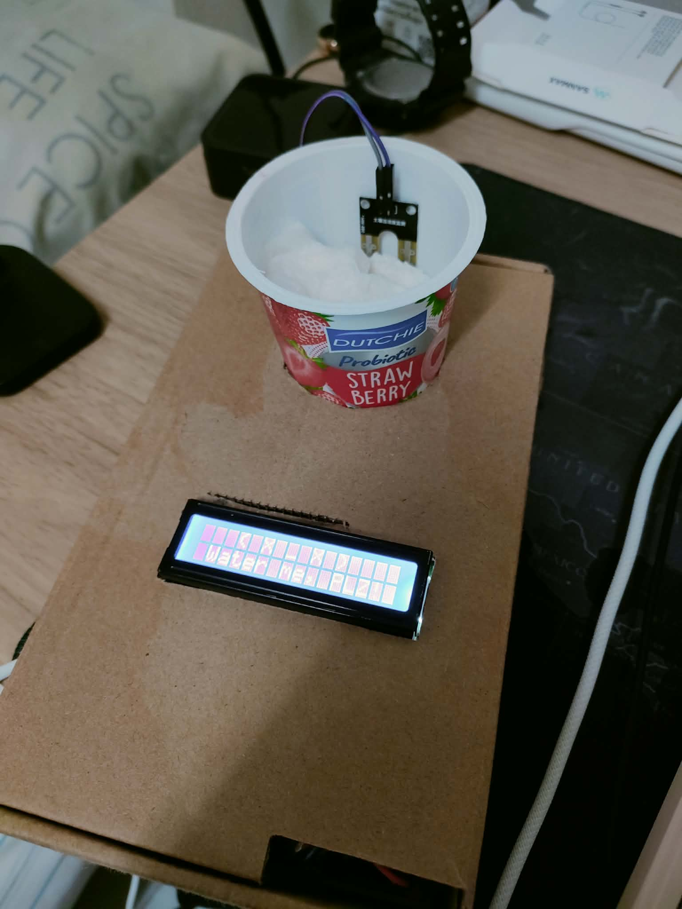
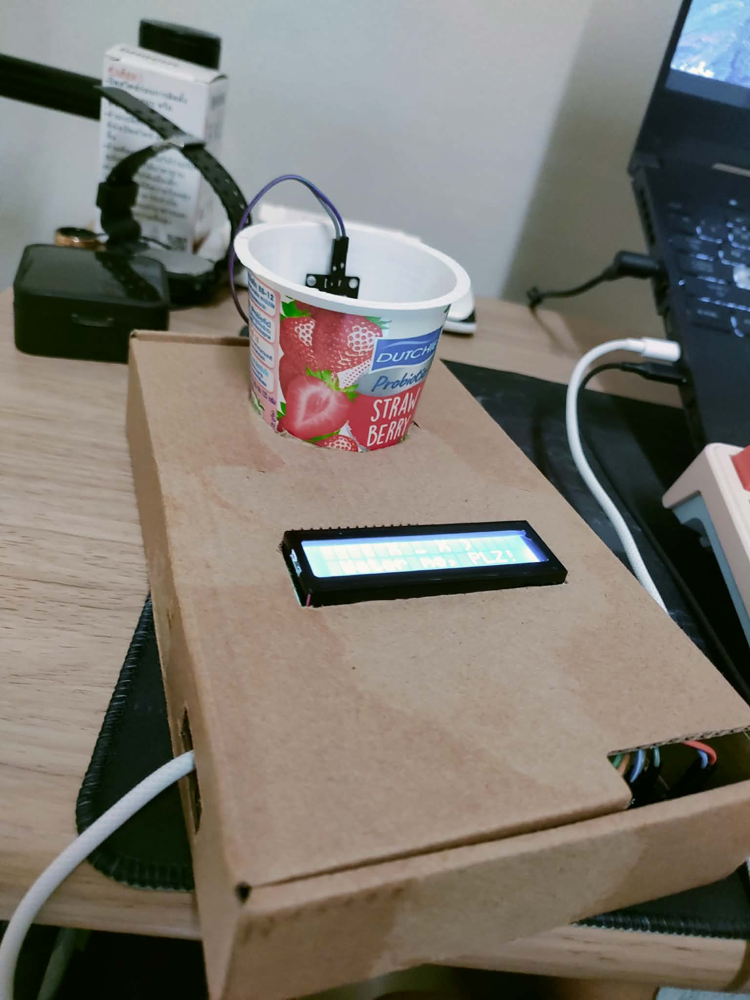
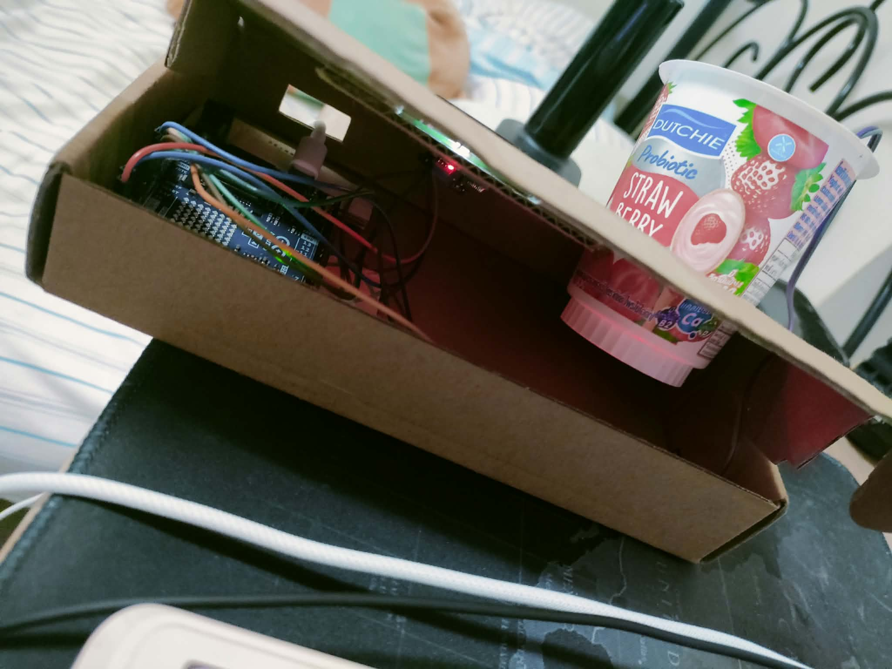
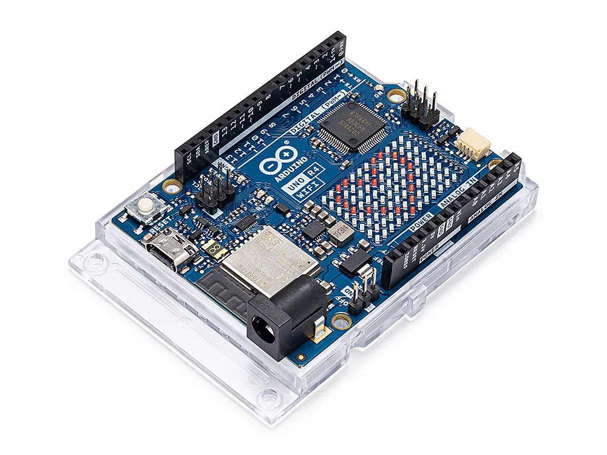

โครงงานวิชา Physical Computing
Project วัดความชื้นของต้นไม้
บทคัดย่อ
โครงงานวัดความชื้นของต้นไม้จัดทำขึ้นเพื่อช่วยติดตามระดับความชื้นในดินและทำให้การดูแลต้นไม้สะดวกยิ่งขึ้น โดยใช้บอร์ด Arduino UNO R4 WiFi ร่วมกับเซนเซอร์วัดความชื้นในดินเพื่ออ่านค่าจากดิน แล้วแปลงค่าที่อ่านได้เป็นเปอร์เซ็นต์ความชื้น ระบบแสดงสถานะของต้นไม้ผ่านจอ LCD โดยใช้ข้อความและสัญลักษณ์ที่แตกต่างกันตามระดับความชื้น พร้อมส่งรายงานค่าความชื้นและสถานะไปยังช่อง Discord ผ่าน Webhook โดยอาศัยการเชื่อมต่อ Wi-Fi ผู้ใช้จึงสามารถตรวจสอบข้อมูลได้ทั้งจากตัวอุปกรณ์และข้อความแจ้งเตือน ทั้งนี้ควรปรับเทียบค่าของเซนเซอร์ให้เหมาะกับดินและอุปกรณ์ที่ใช้จริงก่อนนำไปใช้งาน
ค่าดิบ (ADC) 0 / 1023
ที่มาและความสำคัญ
การรดน้ำต้นไม้ส่วนใหญ่อาศัยการคาดเดา บางคนรดน้ำน้อยเกินไปจนต้นไม้เหี่ยวเฉา บางคนรดมากเกินไปจนดินแฉะและรากเน่า นอกจากนี้ คนที่ไม่มีเวลาหรือต้องเดินทางบ่อยก็มักลืมดูแลต้นไม้ ทำให้ต้นไม้ตายก่อนเวลาอันควร
ผู้จัดทำจึงนำความรู้จากวิชา Physical Computing มาสร้างระบบวัดความชื้นในดิน โดยใช้ไมโครคอนโทรลเลอร์อ่านค่าจากเซนเซอร์และแสดงผลให้เข้าใจง่าย ช่วยให้ตัดสินใจรดน้ำได้จากข้อมูลจริง และต่อยอดเป็นระบบรดน้ำอัตโนมัติได้ในอนาคต
ภาพประกอบโครงงาน



อุปกรณ์ที่ใช้
-

บอร์ดไมโครคอนโทรลเลอร์ (เช่น Arduino Uno) 1 ชิ้น ทำหน้าที่รับค่าจากเซนเซอร์ แปลงเป็นเปอร์เซ็นต์ความชื้น ตัดสินใจว่าดินแห้งหรือเปียก แล้วสั่งให้จอแสดงผลหรือปั๊มน้ำทำงาน -
 เซนเซอร์วัดความชื้นในดิน (Soil Moisture Sensor) 1 ชิ้น ปักลงในดินเพื่อวัดปริมาณน้ำ ส่งสัญญาณไฟฟ้าแบบอนาล็อกให้บอร์ดอ่าน ดินแห้งจะให้ค่าสูง ดินเปียกจะให้ค่าต่ำลง
เซนเซอร์วัดความชื้นในดิน (Soil Moisture Sensor) 1 ชิ้น ปักลงในดินเพื่อวัดปริมาณน้ำ ส่งสัญญาณไฟฟ้าแบบอนาล็อกให้บอร์ดอ่าน ดินแห้งจะให้ค่าสูง ดินเปียกจะให้ค่าต่ำลง -
 จอแสดงผล LCD / OLED หรือ LED แสดงสถานะ 1 ชิ้น แสดงค่าความชื้นและสถานะให้ผู้ใช้เห็นทันที ถ้าใช้ LED ก็แยกสถานะด้วยสี เช่น แดงคือแห้ง เขียวคือพอดี
จอแสดงผล LCD / OLED หรือ LED แสดงสถานะ 1 ชิ้น แสดงค่าความชื้นและสถานะให้ผู้ใช้เห็นทันที ถ้าใช้ LED ก็แยกสถานะด้วยสี เช่น แดงคือแห้ง เขียวคือพอดี -
 เบรดบอร์ดและสายจัมเปอร์ 1 ชุด ใช้ต่อวงจรระหว่างบอร์ด เซนเซอร์ และอุปกรณ์อื่นโดยไม่ต้องบัดกรี แก้ไขหรือต่อใหม่ได้ง่ายระหว่างทดลอง
เบรดบอร์ดและสายจัมเปอร์ 1 ชุด ใช้ต่อวงจรระหว่างบอร์ด เซนเซอร์ และอุปกรณ์อื่นโดยไม่ต้องบัดกรี แก้ไขหรือต่อใหม่ได้ง่ายระหว่างทดลอง
วิธีการใช้งาน
-
จ่ายไฟให้บอร์ด Arduino
ใช้สาย USB Type-C ต่อบอร์ด Arduino UNO R4 WiFi เข้ากับแหล่งจ่ายไฟ 5V ที่จ่ายไฟได้อย่างเหมาะสม เช่น Power Bank หรืออะแดปเตอร์ USB ที่มีคุณภาพ ตรวจสอบให้แน่ใจว่าขั้วต่อแน่นหนาและไม่มีสายชำรุด
-
เตรียมกระถางและต้นไม้
ใส่ดินลงในกระถางและปลูกต้นไม้ให้เรียบร้อย เติมดินให้เพียงพอสำหรับพยุงต้นไม้ โดยไม่อัดแน่นจนเกินไป และเว้นพื้นที่ด้านบนเล็กน้อยเพื่อให้รดน้ำได้สะดวก
-
ติดตั้งเซนเซอร์วัดความชื้น
เสียบส่วนตรวจวัดของเซนเซอร์ลงในดินบริเวณใกล้ราก โดยให้ส่วนตรวจวัดสัมผัสดินอย่างเหมาะสม แต่หลีกเลี่ยงการฝังส่วนวงจรหรือขั้วต่ออิเล็กทรอนิกส์ลงในดินหรือให้น้ำสัมผัสโดยตรง ตรวจสอบสายสัญญาณและการต่อเข้ากับบอร์ดก่อนเปิดใช้งาน
-
ตั้งค่า Wi-Fi และ Discord Webhook
เปิดไฟล์โปรแกรมใน Arduino IDE แล้วกรอกชื่อเครือข่าย Wi-Fi รหัสผ่าน และ URL ของ Discord Webhook ในตำแหน่งที่กำหนด จากนั้นตรวจสอบว่าบอร์ดเชื่อมต่อ Wi-Fi ได้ และ Webhook ชี้ไปยังช่อง Discord ที่ต้องการรับรายงาน ห้ามเผยแพร่รหัสผ่านหรือ URL ของ Webhook ในเว็บไซต์สาธารณะ
-
อัปโหลดโปรแกรมลงบอร์ด
เชื่อมต่อบอร์ดกับคอมพิวเตอร์ เปิดไฟล์ .ino ใน Arduino IDE เลือกบอร์ดและพอร์ตให้ถูกต้อง แล้วกด Verify เพื่อตรวจสอบโปรแกรม หากไม่มีข้อผิดพลาดให้กด Upload เพื่อส่งโปรแกรมลงบอร์ด
-
ตรวจสอบค่าความชื้นและการแจ้งเตือน
เมื่อเริ่มทำงาน จอ LCD จะแสดงสถานะตามค่าที่เซนเซอร์อ่านได้ และระบบจะส่งรายงานไปยัง Discord เป็นระยะ หากค่าที่แสดงไม่ตรงกับสภาพดินจริง ให้ปรับค่า AIR_VALUE และ WATER_VALUE ในโปรแกรมโดยทดลองวัดในสภาพดินแห้งและดินเปียกตามวิธีที่ปลอดภัย
ดาวน์โหลดโค้ด
ไฟล์ Arduino (.ino) สำหรับบอร์ด UNO R4 WiFi อ่านค่าเซนเซอร์ แสดงผลบนจอ LCD และส่งรายงานไป Discord
⬇ ดาวน์โหลด JekGroup.ino- แก้
WIFI_SSID,WIFI_PASSWORDและWEBHOOK_URLก่อนอัปโหลด - ติดตั้งไลบรารี
LiquidCrystal_I2Cใน Arduino IDE (ส่วนWiFiS3มีมากับบอร์ดอยู่แล้ว) - ปรับ
AIR_VALUE(ดินแห้ง/อากาศ) และWATER_VALUE(แช่น้ำ) ให้เหมาะกับเซนเซอร์ของคุณ
ประโยชน์ที่ได้รับ
รดน้ำได้ถูกเวลา
รู้สถานะดินจากค่าที่วัดได้จริง ไม่ต้องเดา รดเมื่อดินแห้งและงดรดเมื่อดินชื้นพอแล้ว
ประหยัดน้ำ
รดเฉพาะเมื่อจำเป็น ไม่เสียน้ำเกินความต้องการของต้นไม้
ลดภาระการดูแลต้นไม้
ไม่ต้องคอยสังเกตดินทุกวัน และถ้าต่อปั๊มน้ำเพิ่มก็ปล่อยให้ระบบรดแทนได้
ได้ทักษะ Physical Computing
ได้ฝึกต่อวงจร เขียนโปรแกรมอ่านค่าเซนเซอร์ และนำข้อมูลมาแสดงผลเป็นงานที่ใช้งานได้จริง